<mat-toolbar color="primary">
    <mat-toolbar-row>
     
      <a mat-button [routerLink]="'/map'"> 
          
       <div class="home-data">

        <button mat-icon-button >
          
        </button>
        <h1 class="title">TrendMap</h1>
      </div>
      </a>
      <span class="menu-spacer"></span>
      <div>
        <a mat-button [routerLink]="'/favorite'"  matTooltip="View Favorites">  </a>
      </div>
      <div class="login-buttons">

        <button mat-raised-button color="accent" (click)="callSignIn()" *ngIf="!this.user">Login</button>
        <div *ngIf="this.user" class="logout-container">
          <div class="user-name">{{this.user.attributes.name}}</div>
          <a mat-button (click)="callSignOut()">  </a>
        </div>
      </div>
    </mat-toolbar-row>
  
    <mat-toolbar-row> 
        <span style="font-size: 12px;">TrendMap allows you to see popular places around you</span>
      </mat-toolbar-row>

  </mat-toolbar>